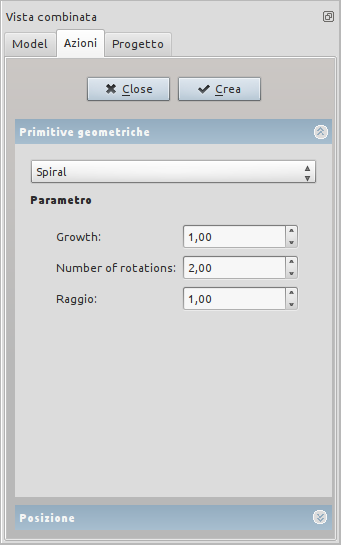
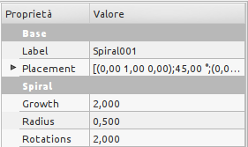

|
| Posizione nel menu |
|---|
| Parte → Crea primitive → Spirale |
| Ambiente |
| Parte, OpenSCAD |
| Avvio veloce |
| Nessuno |
| Vedere anche |
| .. |
Dal dialogo Crea Primitive de'ambiente Parte è disponibile una spirale geometrica primitiva .
Il dialogo Crea Primitive è accessibile tramite l'icona Crea Primitive  del menu Part o della barra degli Strumenti Part, dell'ambiente Part.
del menu Part o della barra degli Strumenti Part, dell'ambiente Part.
Crea un curva parametrica a forma di spirale.
Utilizzare il menu  Crea primitive... → Spirale. Si apre una finestra di dialogo che consente di impostare:
Crea primitive... → Spirale. Si apre una finestra di dialogo che consente di impostare:
Primitive Geometriche
|  |
Spiral Parametri
PosizioneEspandere la voce Posizione per stabilire:
I parametri e il posizionamento sono modificabili tramite la scheda delle proprietà. |
{kind=link}
Proprietà
|  |
DatiBase
Spiral
|
{kind=link}
Oltre alle Proprietà Dati sono disponibili le Proprietà vista degli oggetti.
Esempi
| Spirale di default: | 
|
| Spirale ruotata di 45° sull'asse Z: | 
|
| Spirale ruotata di 45° sull'asse Y: | 
|
disponibile dalla versione 0.14